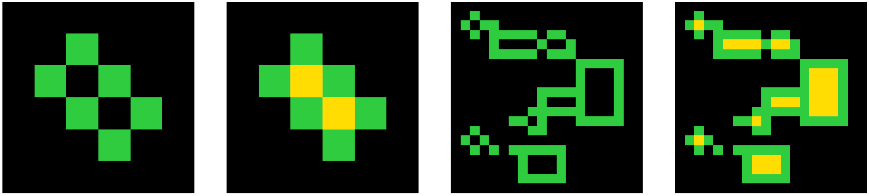

I'd like to be good at ML. But I don't have the hardware to train big models and I'm cheap as hell so for the most part major projects seem pretty off-limits.
But wait! Kaggle's Abstract Reasoning Challenge!
The idea is that you have a set of IQ-ish tests where you're supposed to learn a rule which acts on a grid to produce a new grid. You see a few pairs of grids, understand how the first has been converted into the second and then apply that rule to one or perhaps two test grids to produce answers. Simple!

It's lockdown, so I thought I'd have a go. I failed miserably to actually solve any of the problems, but I thought the approach was pretty cool anyway so writing it up here.
First, you want to be able to search through changes in grids. In order to has a flexible way of specifying changes that can be manipulated in interesting ways you're going to want some kind of domain-specific programming language. On the notebooks for the competition there were a couple of examples of some kind of DSL, inculding this one which restricted itself to a linear sequence of mappings, each from lists of grids to lists of grids (including a fun bit of functional flair) and this one which isn't really properly formulated as a DSL but uses cellular automata in a really cool way and I'd have loved to have had time to include some CA bits.
Instead I grabbed a bit of code from the first one which also came with a simple genetic algorithm to make new programs. The first main change that I made was to replace the linear program structure to a more flexible tree-like one. Instead of just taking in a list of lists and no other arguments, functions in the DSL can take any number of aguments in two forms: numbers and grids. These are added as attributes to the function like sooo..
@attrs(numbers=2, points=0, grids=0)
def swap_color(x, n, m):
c = x.copy()
c[x == n] = m
return c
Functions can also have two types of output, grid and numbers, so when getting an argument for a function, you can grab either a list- or grid-generating function as required. Because the number of arguments is fixed, these programs can be parsed from only a list of the arguments, even though they are implemented in a tree structure where the second argument for a function may be many places along the list, because the first argument requires a number of steps to evaluate, which makes generating them (relatively simple).
This works.. sorta. I stole my first tranch of functions from the internals of this workbook which gives hard-coded solutions for the first 10 of the test puzzles. I made sure that the program generator was definitely capable of generating correct solutions for the first few puzzles, and this works! When there are only a few functions at least. It solves something like 8 of the 400 test puzzles, excluding those it was designed to be able to do (and it doesn't always find those!). Unfortunately, this ddn't transfer well across to the evaluation set, scoring about 1/400 and none of the 100 official test puzzles. :(.
I thought that at this point I would want to add more functions and work on tweaking the DSL for expressiveness, but it seemed the language wasn't really the bottleneck because even with only a pretty small number of functions, it couldn't always find even solutions of length 3-4 - exponential search spaces are in fact exponentially large and the little genetic algorithm struggled to reduce it.
Suddenly this seems like a problem set up for neural networks - guess the next parameter! One of the big difficulties of the ARC is that there's not the quantity of data to do proper training on, only about 2500 pairs even if you cheat and use the evaluation set. With a DSL though, you can make infinite pairs, just generate a program, evaluate it on a grid and boom! So I wrote a program that makes data in this way: a grid, a program and a grid modified by that program. This is then fed into a neural network by using as inputs the two images and a truncated program, and asking it to guess the next entry in the program. Sweet!
You can train this to get a model that predicts a plausible next step in a program that correctly translates one image into the next. You can then use this to generate candidate programs for newly seen puzzles, and use this, along with the old genetic algorithm, to be able to traverse the very large space of possible programs more intelligently.
Sadly this is as far as I got. The whole set up as described above works, but it doesn't meaningfully improve on just randomly searching for programs, even on the set of puzzles that it was trained on. There's a number of potential issues: it may be that the rather small neural network I was training couldn't easily express these complicated kinds of relationship. More seriously, the number of cycles that it could run in training was very limited. My laptop is pretty slow but even if I had a GPU, I couldn't have easily done much more. There downside of implementing a mini programming language and the surrounding infrastrucutre is that there a lot of possibilities for rare bugs and one in particular I couldn't crush which meant training would invariably crash after a few hundred thousand data points. Even without these, running it at high speed would have tricky because the data generation isn't naturally parallelized and so would have stayde slow without, I suspect, quite a bit of work, at least for me who is not wise in these matters.
Still, it was a fun project even if not a great example of picking the right approach. Perhaps it could be made to work much more efficiently, but to me the more interesting question is whether the process of generating the DSL can itself be automated. What process would find programs which efficiently make simple changes in these grids? Is there some kind of computable variant of Kolmogorov complexity which can generate simple programs which accord with our conception of geometric simplicity? If I have any bright sparks in that direction (if you know any leads let me know!) then I'll be back but this one will be filed away - the competition's over.